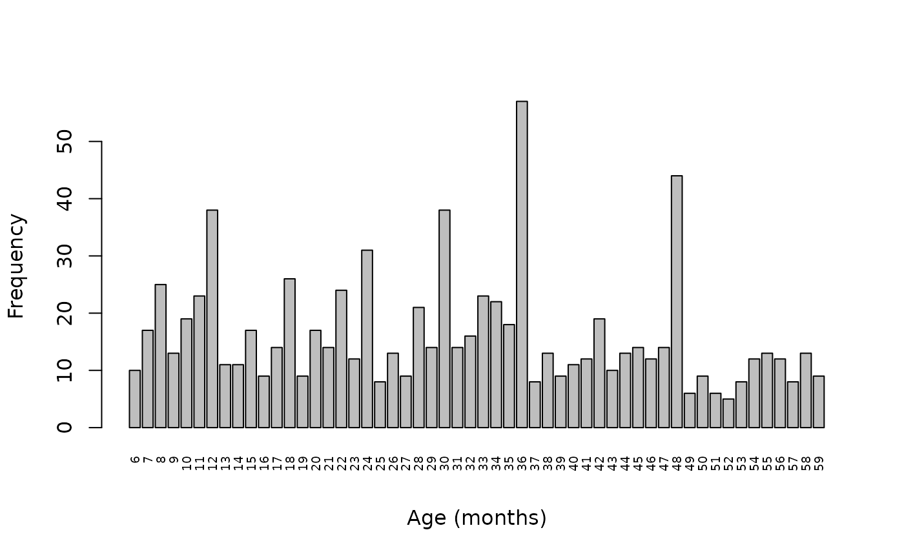
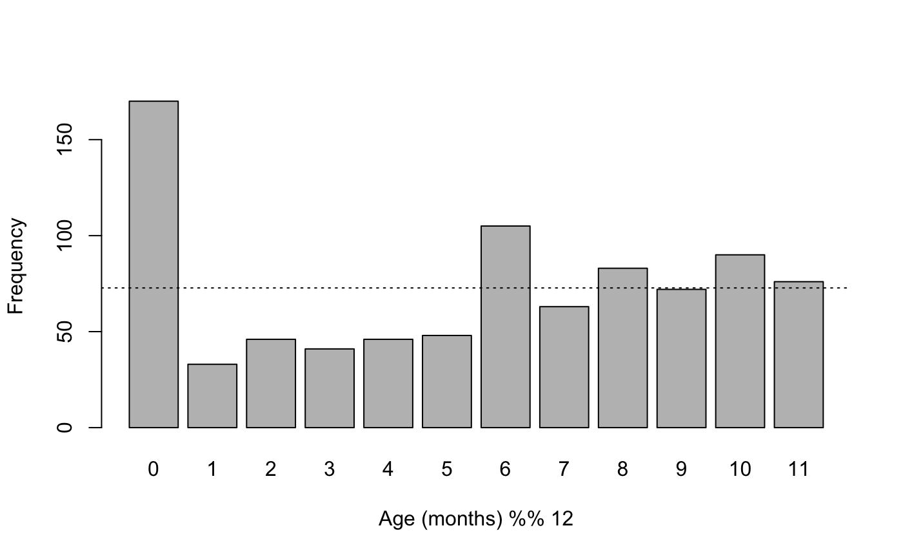
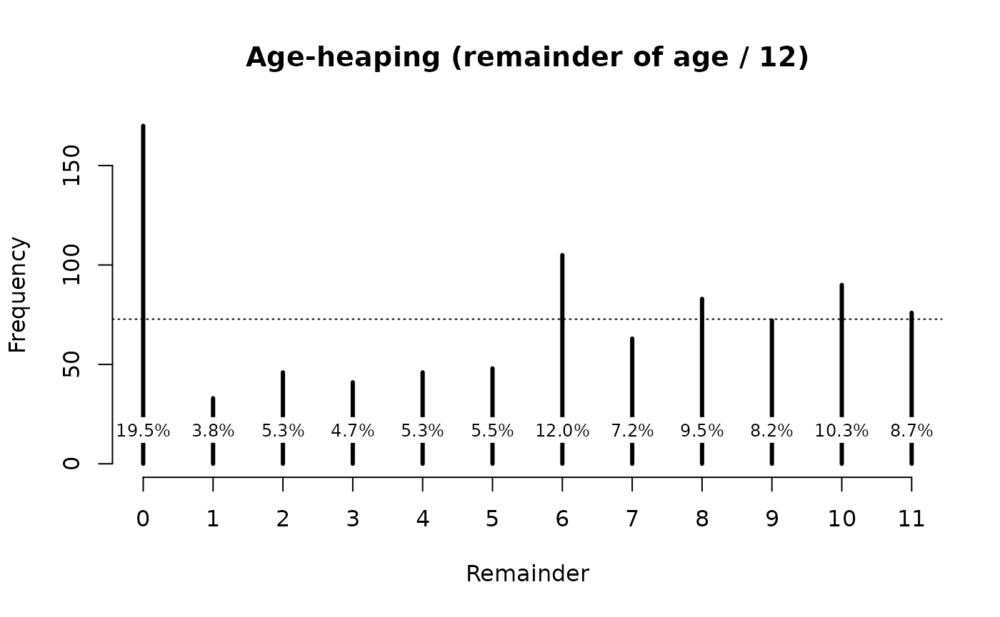
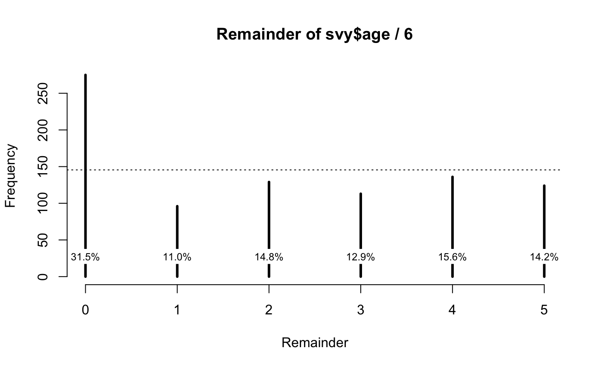
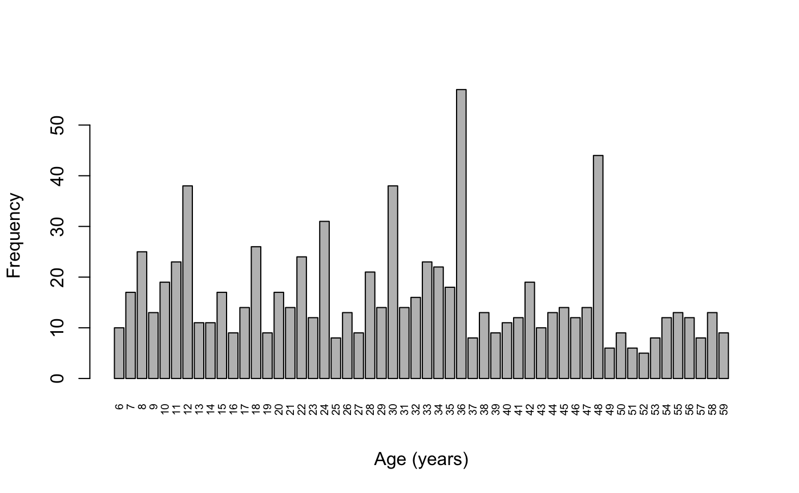
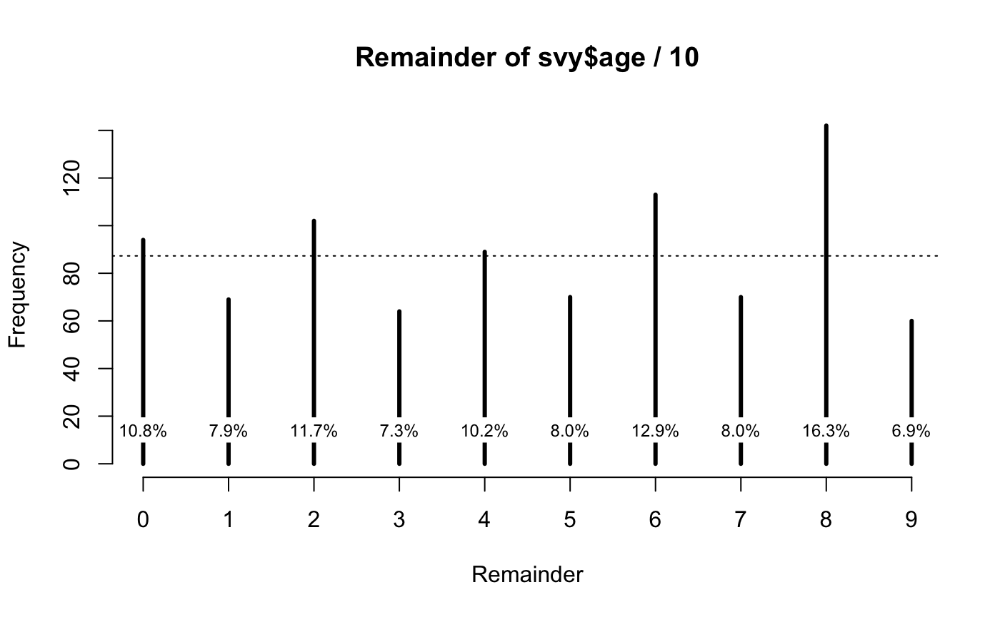
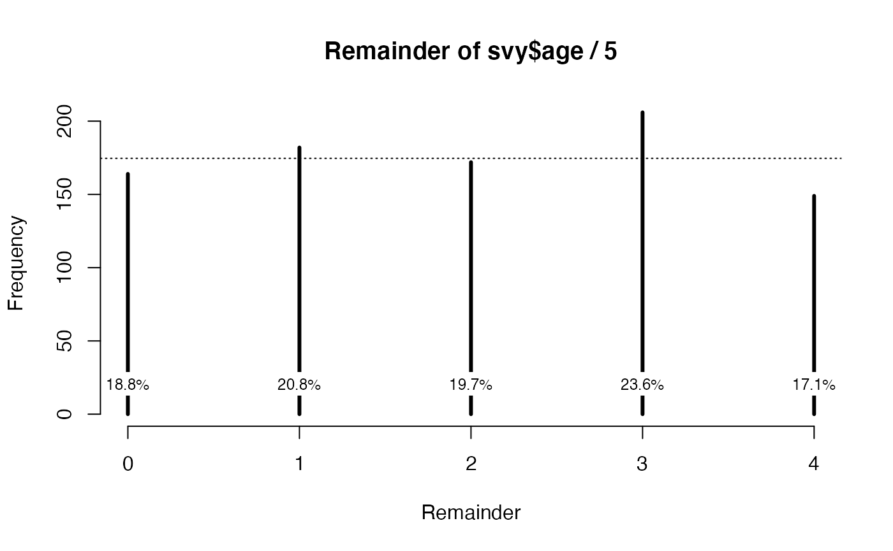

This section depends on some of the material presented in the section relating to digit preference.
Age heaping is the tendency to report children’s ages to the nearest year or adults’ ages to the nearest multiple of five or ten years. Age heaping is very common. This is a major reason why data from nutritional anthropometry surveys is often analysed and reported using broad age groups.
We will retrieve a survey dataset:
svy <- read.table("dp.ex02.csv", header = TRUE, sep = ",")The file dp.ex02.csv is a comma-separated-value (CSV) file containing anthropometric data from a SMART survey in Kabul, Afghanistan.
The first few records in this dataset can be seen using:
head(svy)This returns:
#> psu age sex weight height muac oedema
#> 1 1 6 1 7.3 65.0 146 2
#> 2 1 42 2 12.5 89.5 156 2
#> 3 1 23 1 10.6 78.1 149 2
#> 4 1 18 1 12.8 81.5 160 2
#> 5 1 52 1 12.1 87.3 152 2
#> 6 1 36 2 16.9 93.0 190 2Summarising, tabulating, and visualising age data
The variable of interest is age (age in months):
summary(svy$age)
#> Min. 1st Qu. Median Mean 3rd Qu. Max.
#> 6.0 18.0 30.0 30.4 42.0 59.0Tables can be difficult to use with ungrouped age data because there are usually many different values:
table(svy$age)
#>
#> 6 7 8 9 10 11 12 13 14 15 16 17 18 19 20 21 22 23 24 25 26 27 28 29 30 31
#> 10 17 25 13 19 23 38 11 11 17 9 14 26 9 17 14 24 12 31 8 13 9 21 14 38 14
#> 32 33 34 35 36 37 38 39 40 41 42 43 44 45 46 47 48 49 50 51 52 53 54 55 56 57
#> 16 23 22 18 57 8 13 9 11 12 19 10 13 14 12 14 44 6 9 6 5 8 12 13 12 8
#> 58 59
#> 13 9The fullTable() function from the NiPN data-quality
toolkit is preferred as this will include values with zero counts:
fullTable(svy$age, values = 6:59)
#> 6 7 8 9 10 11 12 13 14 15 16 17 18 19 20 21 22 23 24 25 26 27 28 29 30 31
#> 10 17 25 13 19 23 38 11 11 17 9 14 26 9 17 14 24 12 31 8 13 9 21 14 38 14
#> 32 33 34 35 36 37 38 39 40 41 42 43 44 45 46 47 48 49 50 51 52 53 54 55 56 57
#> 16 23 22 18 57 8 13 9 11 12 19 10 13 14 12 14 44 6 9 6 5 8 12 13 12 8
#> 58 59
#> 13 9We used the fullTable() function here because it returns
a table containing cells for every value specified by the
values parameter. The returned table will also only
contain cells for the values specified by the values
parameter. The default for the values parameter is the
range of the variable being tabulated. This means that the values
parameter can be sometimes be omitted:
fullTable(svy$age)
#> 6 7 8 9 10 11 12 13 14 15 16 17 18 19 20 21 22 23 24 25 26 27 28 29 30 31
#> 10 17 25 13 19 23 38 11 11 17 9 14 26 9 17 14 24 12 31 8 13 9 21 14 38 14
#> 32 33 34 35 36 37 38 39 40 41 42 43 44 45 46 47 48 49 50 51 52 53 54 55 56 57
#> 16 23 22 18 57 8 13 9 11 12 19 10 13 14 12 14 44 6 9 6 5 8 12 13 12 8
#> 58 59
#> 13 9Omitting the values parameter only works reliably for numeric variables containing whole numbers. If the variable being tabulated is a character variable or is a numeric variable containing one or more numbers with decimal places then you should specify the values parameter.
A graphical analysis is usually more informative than a tabular analysis:
barplot(fullTable(svy$age, values = 6:59),
xlab = "Age (months)", ylab = "Frequency", las = 3, cex.names = 0.6)
We expect all ages to be present in roughly equal frequency or with frequency reducing slowly with age due to mortality. We can see that there is marked age-heaping at 12, 18, 24, 30, 36, and 48 months (see figure above). This is very common when age is reported by mothers. This is because of a tendency for mothers and other carers to round ages to whole years or half years.
Note that we used values = 6:59 with the
fullTable() function from the NiPN data quality toolkit. We
did this because it is the range of values that should be present in the
age variable.
Age heaping in children
Age heaping can seriously affect survey results for indices that include an age component (e.g. height- for-age and weight-for age). The effect is important when there is systematic rounding up or systematic rounding down. Systematic rounding can lead to bias. If rounding is systematically down then indices will be biased upwards and prevalence biased downwards. If rounding is systematically up then indices will be biased downwards and prevalence biased upwards.
A useful way of looking at age heaping when age is recorded in months is to examine the remainders when the ages are divided by 12.
The R language provides a special operator (%%) to help with this:
rem <- svy$age %% 12
remTable <- fullTable(rem, values = 0:11)
remTable
#> 0 1 2 3 4 5 6 7 8 9 10 11
#> 170 33 46 41 46 48 105 63 83 72 90 76
prop.table(remTable) * 100
#> 0 1 2 3 4 5 6 7
#> 19.473081 3.780069 5.269187 4.696449 5.269187 5.498282 12.027491 7.216495
#> 8 9 10 11
#> 9.507446 8.247423 10.309278 8.705613
barplot(remTable, xlab = "Age (months) %% 12", ylab = "Frequency")
abline(h = sum(remTable / 12), lty = 3)
chisq.test(remTable)
#>
#> Chi-squared test for given probabilities
#>
#> data: remTable
#> X-squared = 214.96, df = 11, p-value < 2.2e-16The NiPN data quality toolkit provides an R language function called
ageHeaping() that performs this age-heaping analysis.
Applying this function to the example data:
ageHeaping(svy$age)This returns:
#>
#> Age-heaping Analysis
#>
#> data: Remainder of svy$age / 12
#> X-squared = 214.9588, df = 11, p-value = 0.0000The output of the ageHeaping() function can be saved for
later use:
ah12 <- ageHeaping(svy$age)The saved output contains the Chi-squared test and frequency tables of the final digits (counts and percentages). These can be accessed using:
ah12
#>
#> Age-heaping Analysis
#>
#> data: Remainder of svy$age / 12
#> X-squared = 214.9588, df = 11, p-value = 0.0000
ah12$X2
#> X-squared
#> 214.9588
ah12$df
#> df
#> 11
ah12$p
#> [1] 5.791598e-40
ah12$tab
#> Remainder of svy$age / 12
#> 0 1 2 3 4 5 6 7 8 9 10 11
#> 170 33 46 41 46 48 105 63 83 72 90 76
ah12$pct
#> Remainder of svy$age / 12
#> 0 1 2 3 4 5 6 7 8 9 10 11
#> 19.5 3.8 5.3 4.7 5.3 5.5 12.0 7.2 9.5 8.2 10.3 8.7The saved results may also be plotted:
plot(ah12, main = "Age-heaping (remainder of age / 12)")The resulting plot is shown below.

The ageHeaping() function assumes that you want to
examine the remainder after dividing by twelve. This is useful when
working with ages that are recorded in months. It may also be useful to
use other divisors, such as examining the remainder after dividing by
six:
ah6 <- ageHeaping(svy$age, divisor = 6)
print(ah6)
#>
#> Age-heaping Analysis
#>
#> data: Remainder of svy$age / 6
#> X-squared = 145.0275, df = 5, p-value = 0.0000
plot(ah6)
This shows the extent of age heaping at whole and half-years (see figure above).
Age heaping in adults
Using ten and five as divisors can be useful when dealing with data for adults in which ages are recorded in whole years. For example:
svy <- read.table("ah.ex01.csv", header = TRUE, sep = ",")
head(svy)
svy <- ah.ex01
head(svy)The file ah.ex01.csv is a comma-separated-value (CSV) file containing anthropometric data from a Rapid Assessment Method for Older People (RAM-OP) survey in the Dadaab refugee camp in Garissa, Kenya. This is a survey of people aged sixty years and older.
The variable of interest is age (age in years):
summary(svy$age)
#> Min. 1st Qu. Median Mean 3rd Qu. Max.
#> 6.0 18.0 30.0 30.4 42.0 59.0Care should be exercised when specifying the divisor to use in the analysis of age heaping. Not all calendars use base ten. Amongst Han Chinese, for example, age heaping may occur with a twelve-year cycle corresponding to preferred animal years in the Chinese calendar. An analysis of age heaping that concentrates on specific digits (e.g. zero and five) or on decimal intervals will not be appropriate in all populations. It is advisable, therefore to use simple tabulation and visualisation techniques to heap decide an appropriate divisor.
With the example data:
summary(svy$age)
#> Min. 1st Qu. Median Mean 3rd Qu. Max.
#> 6.0 18.0 30.0 30.4 42.0 59.0
fullTable(svy$age)
#> 6 7 8 9 10 11 12 13 14 15 16 17 18 19 20 21 22 23 24 25 26 27 28 29 30 31
#> 10 17 25 13 19 23 38 11 11 17 9 14 26 9 17 14 24 12 31 8 13 9 21 14 38 14
#> 32 33 34 35 36 37 38 39 40 41 42 43 44 45 46 47 48 49 50 51 52 53 54 55 56 57
#> 16 23 22 18 57 8 13 9 11 12 19 10 13 14 12 14 44 6 9 6 5 8 12 13 12 8
#> 58 59
#> 13 9
barplot(fullTable(svy$age),
xlab = "Age (years)", ylab = "Frequency", las = 3, cex.names = 0.6)
shows age-heaping at decades and half-decades (see figure above). In this survey using a divisor of 10 would be appropriate:
ah10 <- ageHeaping(svy$age, divisor = 10)
print(ah10)
#>
#> Age-heaping Analysis
#>
#> data: Remainder of svy$age / 10
#> X-squared = 70.31042, df = 9, p-value = 0.0000
plot(ah10)
There is pronounced age heaping at decades and, to a lesser extent, half-decades in these data (see figure above).
It may also be useful to use other divisors, such as examining the remainder after dividing by five:
ah5 <- ageHeaping(svy$age, divisor = 5)
print(ah5)
#>
#> Age-heaping Analysis
#>
#> data: Remainder of svy$age / 5
#> X-squared = 10.39633, df = 4, p-value = 0.0343
plot(ah5)
This shows the extent of age heaping at whole and half decades (see figure above).